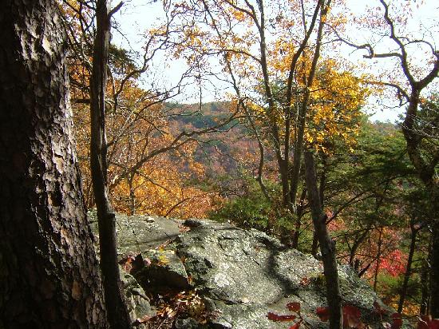

Landmark
Oak Mountain State Park
Location: 200 Terrace Dr, Pelham, AL 35124
Contact Info: (205) 620-2520
Website: N/A
About: This park started from being a 940-acre park, established by the Alabama State Lands Act of 1927. Since then, Oak Mountain State Park has grown to 9,940 acres making it Alabama’s largest state park. With the largest land-area, it made the park one of the widest varieties of outdoor activities of any state park, and due to its proximity to Birmingham, Oak Mountain is a perfect stop while traveling to and from the state’s largest city.
